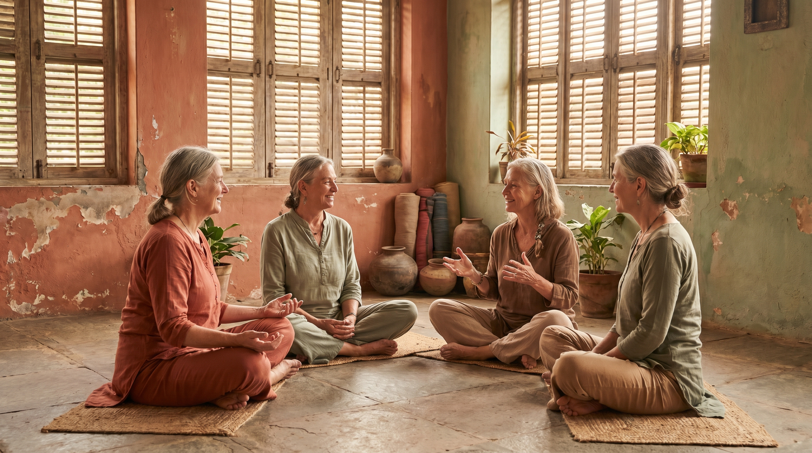
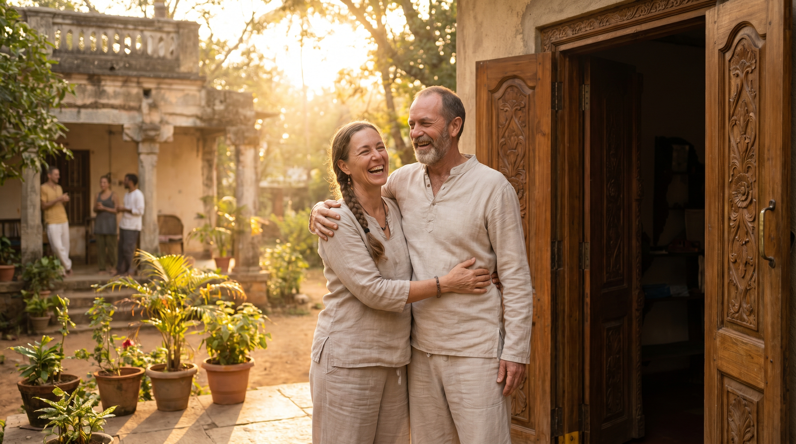

Genuine sangha without gatekeeping
Name the insecurity that blocks transparency - and build referral habits that strengthen the whole community.
Outcomes
Six shifts for yoga teachers who want therapeutic depth, honest community, and classrooms that hold real humans - not Instagram shapes.
Name the insecurity that blocks transparency - and build referral habits that strengthen the whole community.
Stop expecting one shala to be everything. Diversify where you belong - professionally and personally.
Unlearn the aesthetic high. Prioritize safety, inquiry, and sequencing that reduces harm.
Replace fixed choreography with observation, breath vectors, and presence - even when you feel excited to perform.
Honor lived experience. Teach students to dialogue with sensation instead of quoting scripts.
Anchor daily teaching struggles to the real goal: safe spaces, less suffering, and students who leave steadier than they arrived.
Transformation
This course is for teachers who already have skill on the mat but feel the gap between what yoga promises and how studios often compete for students.
Before
Gatekeeping, hoarding students, and teaching from insecurity dressed up as tradition.
After
Referral-first sangha: pass prenatal, therapy, or advanced work to the teacher who serves it best.
Before
Walking in with a fixed sequence because arm balances feel exciting today.
After
Opening with How can I help the people in front of me? - then watching breath and vectors.
Before
Injuries that force humility only after the body breaks.
After
Bio-intelligence early: fewer advanced shapes, more sustainable practice design for students.
Before
One long talk-track video with no path back to the idea you needed.
After
18 micro-chapters, study notes, quizzes, and an AI tutor grounded in Chandraprakash's teaching.
Inside the course
This recording has no slide deck - so we built visual themes that mirror the material: sangha, inquiry, somatic rest, and teacher-to-teacher trust.

Community that shares students instead of hoarding them.
Presence and observation before choreography.
Intelligence through sensation, not theory alone.

Networks that survive beyond one studio brand.
Curriculum
From sangha and referrals through therapeutic unlearning to somatic intelligence, expressive arts, and authentic human connection.
Your instructor
Help students design a practice that is sustainable for the long term.
R Chandraprakash (Chandraprakash R Naidu) is a senior yoga educator based in Mysore, India - the city where modern ashtanga grew up and where therapeutic hatha still has to earn its place beside performance culture. He is RYT-200 certified with more than a decade of teaching experience.
His work weaves daily asana, movement science, flow arts, and Nuad Thai / deep-tissue bodywork into classes that prioritize recovery, observation, and student agency. He has taught from Kurma Shala in Gokulam (across from the KPJAYI shala) and trains teachers who want therapeutic depth without losing the fire of Mysore practice.
Chandraprakash also leads somatic and expressive-arts retreat work (including Ladakh immersions) and teaches online via platforms such as Omstars. Students know him as Chandru - the teacher who will pass you to someone else when that is the honest answer.
Instructor photo: public host profile, Omstars.
Enrollment
Structured teacher-education on Spark - chapterized video, notes, and application tools. No slide deck for this recording; the value is in the teaching narrative and how Spark breaks it apart for retention.
Course stack
Enrollment bonuses
Course stack ($548 USD) + enrollment bonuses ($64 USD). Evergreen pricing - no launch window required.
Platform
Navigate by theme - sangha, therapeutic shift, somatic intelligence - instead of scrubbing one long talk.
Each idea is its own chapter with notes and quizzes, built for busy teachers.
Learning-mode questions about referrals, safety, and classroom inquiry.
Ask questions grounded in Chandraprakash's narrative while you study.
Complete Module 1 (Building Genuine Community). If you do not feel clearer about sangha, referrals, and teaching from a larger purpose, email within 14 days for a full refund.
One condition: open at least three chapters and attempt one quiz question. This filters tire-kickers, not serious teachers.
Pricing
One-time purchase. Lifetime access. Your price is set automatically at checkout based on your region - India and similar markets receive the lower tier; UK, US, Singapore, and other full-price markets receive the international rate.
India / 50% PPP tier
Stated value $612 USD (course + bonuses)
$79 USD
Approx. ₹7,379 · one-time · lifetime access
Enroll - India tierInternational
Stated value $612 USD (course + bonuses)
$129 USD
Approx. ₹12,049 · one-time · lifetime access
Enroll - InternationalCheckout link will be added when the course goes live on Spark (production video 172608). Both buttons above will route to the same geo-priced checkout.
FAQ
Intermediate level. Most value lands if you already teach and feel the gap between performance culture and therapeutic work - Chandraprakash speaks as someone who has unlearned the aesthetic high.
No. This production is talk-forward philosophy and teaching practice. Spark still gives you chapter breaks, study notes, quizzes, and the AI tutor - you are not stuck with a single scrub bar.
Self-paced with lifetime access. Move through 18 chapters on your schedule.
Structured curriculum, notes, quizzes, and tutor support - built for teachers who will apply the ideas in rooms with real students.
Module 1 Clarity Guarantee: complete Module 1, open at least three chapters, attempt one quiz, and request a refund within 14 days if the community and purpose framing did not land.
Checkout applies geo-pricing automatically. India and similar markets see $79 USD (≈ ₹7,379); full-price markets see $129 USD (≈ ₹12,049).
Structured async education for yoga teachers ready to unlearn performance culture. Includes the Sangha & referral playbook and Therapeutic observation checklist with every enrollment.
Enroll - from $79 USD